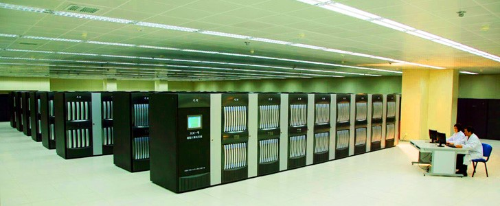

Больше информации по теме:
Китайский суперкомпьютер Tianhe-1

Cуперкомпьютер Tianhe-1
Китай присоединяется к суперкомпьютерной элите.
Китай стал одним из немногих государств, имея один из пяти самых высокопроизводительных суперкомпьютеров мира.
Суперкомпьютер Tianhe-1, который находится в Национальном Суперкомпьютерном центре в Тяньцзине , позволяет занимать два года подряд пятое место в списке Top 500 суперкомпьютеров мира.
Tianhe-1 содержит более чем 70.000 чипов и может вычислить 563 триллиона операций в секунду (терафлоп).
Он используется для разведки новых нефтерождений и для решения инженерных задач, таких как моделирование новых конструкций в авиастроении.